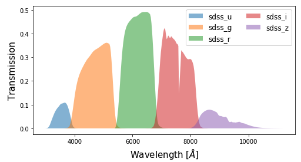

Managing filters¶
Before proceeding any analysis with piXedfit, we should make sure that our photometric filters (i.e., the transmission functions) are recognized by piXedfit. For this, piXedfit provides various functions that can be used by user for managing the library of filters within the piXedfit system. Below, we will demonstrate how to do it.
See available filters¶
To see a list of filters that are already available in piXedfit, we can use the following function.
from piXedfit.utils.filtering import list_filters filters = list_filters()
Add filter¶
We can also add a new filter transmission function using the following script.
from piXedfit.utils.filtering import add_filter filter_name = 'name_of_filter' filter_wave = fil_w # wavelength grid in the transmission function filter_transmission = fil_t # transmission function filter_cwave = c_wave # central wavelength of the filter add_filter(filter_name, filter_wave, filter_transmission, filter_cwave)
Remove filter¶
To remove a filter from the list of available filters, we can use the following function.
from piXedfit.utils.filtering import remove_filter remove_filter(filter_name)
Change filter name¶
One can change name of a filter in the list via
from piXedfit.utils.filtering import change_filter_name change_filter_name(old_filter_name, new_filter_name)
Get filter transmission¶
It is also possible to get the transmission function of a filter. Below shows an example of script to get and plot the transmision functions of SDSS filters.
from piXedfit.utils.filtering import get_filter_curve filters = ['sdss_u', 'sdss_g', 'sdss_r', 'sdss_i', 'sdss_z'] fig1 = plt.figure(figsize=(8,4)) f1 = plt.subplot() plt.xlabel(r"Wavelength [$\AA$]", fontsize=15) plt.ylabel("Transmission", fontsize=15) for bb in range(0,len(filters)): fil_w, fil_t = get_filter_curve(filters[bb]) f1.fill_between(fil_w, 0, fil_t, alpha=0.5, label=filters[bb]) plt.legend(loc=1, ncol=2, fontsize=12)
Get central wavelength of filters¶
One can also get information on the central wavelength of a filter using the following command.
from piXedfit.utils.filtering import cwave_filters photo_wave = cwave_filters(filters)
filters is a list of filter names (in string format).